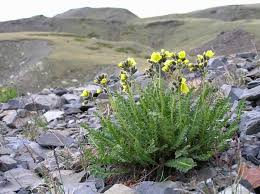

Biebersteiniaceae
Biebersteiniaceae is a small, monogeneric family containing only the genus Biebersteinia, with about five species of glandular-hairy perennial herbs. These plants have pinnately compound leaves, 5-merous flowers, and a distinctive schizocarpic fruit. They exhibit a disjunct distribution across temperate Asia and the Mediterranean region and are placed in the order Sapindales.
Overview
The Biebersteiniaceae family consists of a single genus, Biebersteinia, comprising around five species of perennial herbs. These plants typically grow from thick, woody rhizomes or rootstocks and are characterized by their covering of sticky glandular hairs, which often makes them aromatic. Their leaves are pinnately compound with lobed leaflets, giving them a somewhat fern-like appearance.
Species of Biebersteinia are found in temperate, often mountainous or steppe regions, with a notably disjunct distribution stretching from Greece and Turkey eastward through Central Asia and the Himalayas to China. They are well-adapted to their environments, often surviving harsh conditions via their underground storage organs.
Phylogenetically, Biebersteiniaceae is placed within the order Sapindales (which includes maples, citrus, cashews, etc.), representing an early-diverging lineage within this large and mostly woody order. The family has little known economic importance but is of scientific interest due to its unique characteristics and phylogenetic position.
Quick Facts
- Scientific Name: Biebersteiniaceae
- Common Name: (None)
- Number of Genera: 1 (Biebersteinia)
- Number of Species: Approximately 5
- Distribution: Disjunct: Greece eastward through Central Asia & Himalayas to China.
- Evolutionary Group: Eudicots - Rosids - Malvids - Sapindales
Key Characteristics
Growth Form and Habit
Plants are perennial herbs arising from thick, woody rhizomes or rootstocks. The entire plant is typically covered in conspicuous glandular hairs, making it sticky to the touch and often aromatic.
Leaves
Leaves are arranged alternately and are pinnately compound (usually imparipinnate - with a single terminal leaflet). The leaflets are further dissected, being deeply lobed or pinnatifid, contributing to a feathery appearance. Stipules are present, often relatively large and leaf-like or fused to the petiole base.
Flowers
Flowers are arranged in terminal racemes or panicles. They are bisexual, radially symmetrical (actinomorphic), and typically 5-merous. Flower color is usually yellow, but sometimes pinkish or reddish.
- Sepals: 5, separate or slightly fused at the base, persistent in fruit, and often glandular-hairy.
- Petals: 5, separate, usually narrowed at the base (clawed).
- Stamens: Typically 10, arranged in two whorls of 5 (obdiplostemonous: outer whorl opposite sepals, inner opposite petals). Filaments are often widened at the base, sometimes bearing basal appendages or nectar glands. Anthers open via longitudinal slits. Some species may have 5 additional staminodes.
- Ovary: Superior, distinctively composed of 5 carpels that are either entirely separate (apocarpous) or fused only at the very base (weakly syncarpous). A single, columnar style arises from the base of the carpels (gynobasic style) and is shared by all carpels, topped by a 5-lobed or capitate stigma. Each carpel typically contains 1 (or 2) ovules.
Fruits and Seeds
The fruit is a dry schizocarp (specifically a regma), which splits apart at maturity into 5 individual, one-seeded segments (mericarps). These segments often remain attached to the persistent central style for some time before dispersal.
Chemical Characteristics
The prominent glandular hairs produce volatile compounds responsible for the plants' aroma. The specific chemical composition is not widely exploited but likely includes essential oils and resins typical of glandular herbs. Their placement in Sapindales suggests they likely do not produce glucosinolates or betalains.
Field Identification
Identifying Biebersteiniaceae involves recognizing its unique combination of herbaceous habit, glandular hairiness, compound leaves, and distinctive flower and fruit structure:
Primary Identification Features
- Habit: Perennial herb arising from a woody base/rhizome, conspicuously covered in sticky glandular hairs and often aromatic.
- Leaves: Alternate, pinnately compound with deeply lobed or divided leaflets (fern-like appearance); stipules present.
- Flowers: Radially symmetric, usually yellow, 5 petals, 10 stamens in two whorls.
- Ovary/Style: Ovary composed of 5 nearly separate carpels united by a single, central gynobasic style (arising from the base between carpels).
- Fruit: A dry fruit splitting into 5 one-seeded segments (mericarps), often attached to the persistent style.
Secondary Identification Features
- Inflorescence: Flowers borne in terminal racemes or panicles.
- Stamens: Obdiplostemonous arrangement (outer whorl opposite sepals).
- Habitat: Found in temperate mountainous or steppe regions from Greece to Central Asia/China.
Seasonal Identification Tips
- Growing Season: Plants emerge from rhizomes/rootstocks during the growing season (spring/summer). Glandular hairs, compound leaves, and overall habit are visible then.
- Flowering: Flowers appear seasonally within the growing period.
- Fruiting: The characteristic schizocarpic fruits develop after flowering and are key for confirmation.
Common Confusion Points
- Geraniaceae (Geranium Family): Also often herbs with 5-merous flowers, sometimes compound leaves, and schizocarpic fruits. However, Geraniaceae typically lack dense glandular hair covering the whole plant, usually have styles fused into a persistent beak (rostrum) that aids dispersal by coiling/twisting (not a gynobasic style), often have different stamen numbers/fusion, and belong to a different order (Geraniales).
- Rosaceae (Rose Family): Some herbaceous Rosaceae have compound leaves and stipules (e.g., Potentilla), but their flowers usually have a hypanthium, often numerous stamens (>10), and different ovary/fruit types (e.g., achenes on a receptacle, drupelets).
- Other Glandular Herbs: While many plants are glandular, the combination of other features (compound leaves, flower structure, near-apocarpous ovary with gynobasic style, schizocarp fruit) is diagnostic for Biebersteinia.
Field Guide Quick Reference
Look For:
- Perennial herb, sticky glandular-hairy
- Alternate, pinnately compound leaves
- Leaflets deeply lobed/divided
- Stipules present
- Flowers 5-merous, usually yellow
- 10 stamens (obdiplostemonous)
- Ovary of 5 nearly separate carpels
- Single central gynobasic style
- Fruit splits into 5 segments (schizocarp)
Key Variations:
- Degree of leaflet dissection
- Flower color (mostly yellow, some pinkish/reddish)
- Plant size and robustness
Notable Examples
The family contains only the genus Biebersteinia with about 5 species:

Biebersteinia odora
(No common name)
A representative species found in Central Asia and surrounding regions (e.g., Iran, Afghanistan, Himalayas, China). It is a perennial herb covered in glandular hairs, with pinnately compound leaves and racemes of typically yellow, 5-petaled flowers, exhibiting the characteristic gynobasic style and schizocarpic fruit.

Biebersteinia multifida
(No common name)
Another species found across a similar range, from Turkey and Iran through Central Asia to China. Known for its highly divided (multifid) leaflets, contributing to the fern-like appearance of the foliage. Like other species, it is glandular-hairy and has the characteristic floral and fruit structures of the family.
Phylogeny and Classification
Biebersteiniaceae is classified within the order Sapindales, belonging to the Malvid clade of Rosid eudicots. Its phylogenetic position within Sapindales has been subject to some debate, but it is consistently resolved as an early-diverging lineage, separate from the core families like Sapindaceae, Rutaceae, Anacardiaceae, and Meliaceae.
Molecular studies often place Biebersteiniaceae sister to Nitrariaceae (another small family sometimes included in Sapindales or placed nearby), or potentially sister to all other Sapindales families (though the position of Vitaceae relative to Sapindales also affects this interpretation; APG IV places Vitaceae in its own order Vitales). This basal position highlights its unique combination of characteristics that differ significantly from the more derived, often woody families typical of the order.
Position in Plant Phylogeny
- Kingdom: Plantae
- Clade: Angiosperms (Flowering plants)
- Clade: Eudicots
- Clade: Rosids
- Clade: Malvids
- Order: Sapindales
- Family: Biebersteiniaceae
Evolutionary Significance
Biebersteiniaceae provides important insights into the evolution of the Sapindales order:
- Basal Lineage: Its position helps understand the ancestral traits and early diversification patterns within Sapindales, an economically and ecologically important order.
- Herbaceous Habit: Represents an herbaceous lineage in an order dominated by woody plants, suggesting either retention of an ancestral herbaceous state or a secondary evolution towards it.
- Unique Morphology: Features like the nearly separate carpels with a gynobasic style and the schizocarpic fruit are unusual within Sapindales and may represent plesiomorphic (ancestral) or autapomorphic (uniquely derived) traits.
- Biogeography: The disjunct distribution across temperate Asia and the Mediterranean hints at a potentially wider historical range or specific adaptations allowing persistence in these regions.